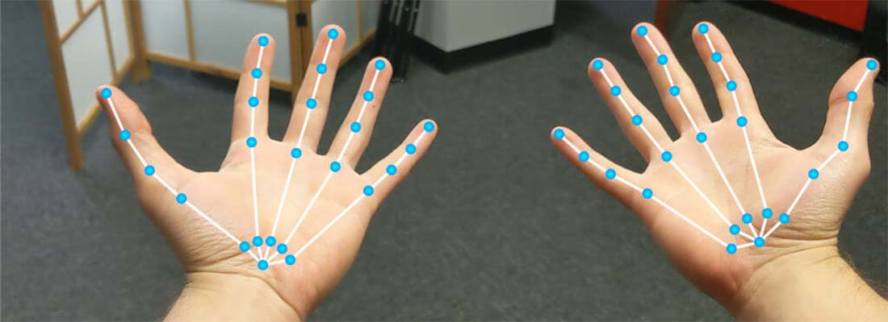
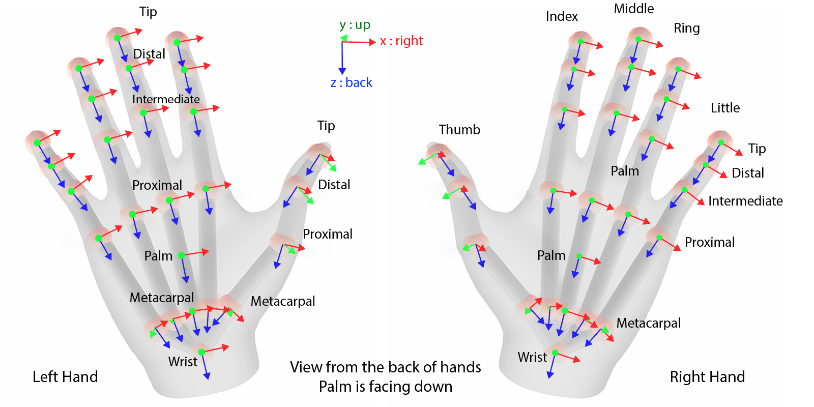
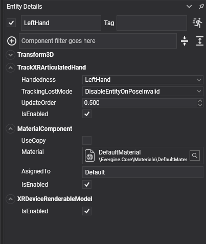

TrackXRArticulatedHand

TrackXRArticulatedHand makes an entity follow one of the user's hands, and gives you the pose of every joint of that hand. Use it to build hand interactions without controllers: touching buttons with a fingertip, grabbing with a pinch, or drawing the hand yourself.
Hand tracking comes from the OpenXR XR_EXT_hand_tracking extension, which the Meta Quest, Pico and Android XR templates enable. Android XR only enables it when the user grants the hand tracking permission. On platforms or runtimes without it, the component never connects.
Hand joints
Joints are identified by the XRHandJointKind enumeration: Palm, Wrist, and four joints per finger from the metacarpal to the tip (ThumbMetacarpal to ThumbTip, IndexMetacarpal to IndexTip, and so on for the middle, ring and little fingers).

The entity follows the Palm joint.
Each joint is an XRHandJoint:
| Field | Description |
|---|---|
| Pose | Position and orientation of the joint, as a ViewPose. |
| Radius | Radius of the joint in metres: roughly half the thickness of the finger at that point. Use it to size colliders or visual markers. |
| Accuracy | Tracking accuracy of the joint, as reported by the platform. |
Properties
| Property | Default | Description |
|---|---|---|
| Handedness | LeftHand |
The hand to track: LeftHand or RightHand. |
| TrackingLostMode | DisableEntityOnPoseInvalid |
What happens to the entity when tracking fails. See common properties. |
| SupportedHandJointKind | Read-only | The XRHandJointKind[] joints this device tracks, or null while no hand is selected. Some devices track fewer joints. |
| ControllerState | Read-only | The hand as a controller. With XR_FB_hand_tracking_aim (Meta Quest), a pinch between thumb and index sets Trigger to the pinch strength and drives TriggerButton, and Pointer follows the aim ray. |
It also has the members every tracking component shares, listed in common properties.
| Method | Description |
|---|---|
bool TryGetArticulatedHandJoint(XRHandJointKind jointKind, out XRHandJoint joint) |
Gets a joint in world space, including the transform of the entity's parent. Returns false when the joint is not available. |
bool TryGetArticulatedHandJointLocal(XRHandJointKind jointKind, out XRHandJoint joint) |
Gets a joint in tracking space, as the platform reports it. Enough to compare two joints of the same hand. |
Using TrackXRArticulatedHand
Draw the joints
This scene tracks the left hand and draws an axis at every joint, sized by the joint radius:
using System;
using Evergine.Components.XR;
using Evergine.Framework;
using Evergine.Framework.Graphics;
using Evergine.Framework.Managers;
using Evergine.Framework.XR;
using Evergine.Mathematics;
public class HandScene : Scene
{
protected override void CreateScene()
{
base.CreateScene();
var leftHand = new Entity("LeftHand")
.AddComponent(new Transform3D())
.AddComponent(new TrackXRArticulatedHand()
{
Handedness = XRHandedness.LeftHand,
})
.AddComponent(new DrawHandJoints());
this.Managers.EntityManager.Add(leftHand);
}
}
public class DrawHandJoints : Behavior
{
[BindComponent]
private TrackXRArticulatedHand hand = null;
protected override void Update(TimeSpan gameTime)
{
var joints = this.hand.SupportedHandJointKind;
if (!this.hand.IsConnected || joints == null)
{
return;
}
var lineBatch = ((RenderManager)this.Managers.RenderManager).LineBatch3D;
foreach (var jointKind in joints)
{
// World-space pose, so the axes stay on the hand when the tracking space moves.
if (this.hand.TryGetArticulatedHandJoint(jointKind, out XRHandJoint joint))
{
Matrix4x4.CreateFromTR(ref joint.Pose.Position, ref joint.Pose.Orientation, out var jointTransform);
lineBatch.DrawAxis(jointTransform, joint.Radius * 2);
}
}
}
}
Detect a pinch from the joints
The pinch gesture of ControllerState needs a Meta extension. The joints alone are enough to detect it on any device with hand tracking:
using System;
using Evergine.Components.XR;
using Evergine.Framework;
using Evergine.Framework.XR;
using Evergine.Mathematics;
public class PinchDetector : Behavior
{
[BindComponent]
private TrackXRArticulatedHand hand = null;
// Fingertips closer than this count as a pinch, in metres.
public float Threshold { get; set; } = 0.02f;
public bool IsPinching { get; private set; }
protected override void Update(TimeSpan gameTime)
{
// Both joints come from the same hand, so tracking space is enough to compare them.
if (this.hand.TryGetArticulatedHandJointLocal(XRHandJointKind.ThumbTip, out var thumb) &&
this.hand.TryGetArticulatedHandJointLocal(XRHandJointKind.IndexTip, out var index))
{
this.IsPinching = Vector3.Distance(thumb.Pose.Position, index.Pose.Position) < this.Threshold;
}
else
{
this.IsPinching = false;
}
}
}
Render the hands
XRDeviceRenderableModel loads the 3D model the platform provides for a tracked device and adds it under the entity. Add it next to any tracking component:
- With
TrackXRArticulatedHandon Meta Quest, the model is a skinned hand mesh that follows the user's fingers. It needsXR_FB_hand_tracking_mesh. - With
TrackXRControllerorAdvancedTrackXRDeviceon OpenVR, the model is the SteamVR render model of the device. - OpenXR provides no controller models, so draw your own mesh for controllers there.

| Member | Description |
|---|---|
| RenderableEntity | The entity created for the model, or null until it loads. The model loads asynchronously when the component starts, and again when the tracked device changes. |
If the entity also has a MaterialComponent, its material replaces every material of the model. Without one, the model keeps the materials the platform gives it.
using Evergine.Components.Graphics3D;
using Evergine.Components.XR;
using Evergine.Framework;
using Evergine.Framework.Graphics;
using Evergine.Framework.XR;
public class HandsScene : Scene
{
protected override void CreateScene()
{
base.CreateScene();
var material = this.Managers.AssetSceneManager.Load<Material>(DefaultResourcesIDs.DefaultMaterialID);
foreach (var handedness in new[] { XRHandedness.LeftHand, XRHandedness.RightHand })
{
var hand = new Entity($"{handedness}")
.AddComponent(new Transform3D())
// Optional: every material of the hand model is replaced by this one.
.AddComponent(new MaterialComponent() { Material = material })
.AddComponent(new TrackXRArticulatedHand() { Handedness = handedness })
.AddComponent(new XRDeviceRenderableModel());
this.Managers.EntityManager.Add(hand);
}
}
}
See also
- TrackXRController: the controller state that hands also expose.
- Meta Quest: tracking hands and controllers at the same time.